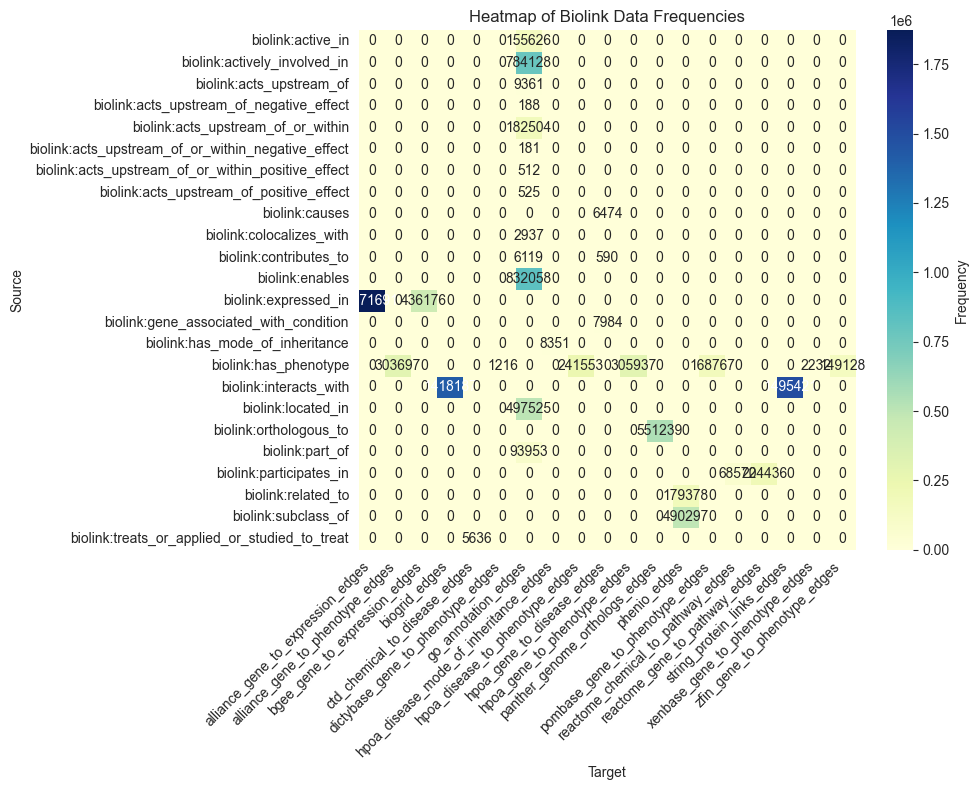

Example: Monarch-KG notebook
Illustrates use of LinkML-Store over the Monarch-KG database (duckdb serialization)
First we initialize a Client object:
[9]:
from linkml_store.api.client import Client
client = Client()
Next we download the dump (using pystow, to cache if needed)
[11]:
from linkml_store.constants import LINKML_STORE_MODULE
MONARCH_KG_DB = "https://data.monarchinitiative.org/monarch-kg/latest/monarch-kg.duckdb.gz"
path = LINKML_STORE_MODULE.ensure_gunzip(url=MONARCH_KG_DB, autoclean=True)
[12]:
database = client.attach_database(f"duckdb:///{path}", "monarch-kg")
[13]:
edges_coll = database.get_collection("denormalized_edges")
/Users/cjm/Library/Caches/pypoetry/virtualenvs/linkml-store-8ZYO4kTy-py3.10/lib/python3.10/site-packages/duckdb_engine/__init__.py:588: SAWarning: Did not recognize type 'list' of column 'closure'
columns = self._get_columns_info(rows, domains, enums, schema) # type: ignore[attr-defined]
/Users/cjm/Library/Caches/pypoetry/virtualenvs/linkml-store-8ZYO4kTy-py3.10/lib/python3.10/site-packages/duckdb_engine/__init__.py:588: SAWarning: Did not recognize type 'list' of column 'closure_label'
columns = self._get_columns_info(rows, domains, enums, schema) # type: ignore[attr-defined]
[14]:
qr = edges_coll.find()
qr.rows_dataframe
[14]:
| agent_type | aggregator_knowledge_source | category | evidence_count | frequency_qualifier | frequency_qualifier_category | frequency_qualifier_closure | frequency_qualifier_closure_label | frequency_qualifier_label | frequency_qualifier_namespace | ... | stage_qualifier_label | stage_qualifier_namespace | subject | subject_category | subject_closure | subject_closure_label | subject_label | subject_namespace | subject_taxon | subject_taxon_label | |
|---|---|---|---|---|---|---|---|---|---|---|---|---|---|---|---|---|---|---|---|---|---|
| 0 | not_provided | infores:monarchinitiative | biolink:PairwiseGeneToGeneInteraction | 4 | None | None | None | None | None | None | ... | None | None | FB:FBgn0033485 | biolink:Gene | None | None | RpLP0-like | FB | NCBITaxon:7227 | Drosophila melanogaster |
| 1 | not_provided | infores:monarchinitiative | biolink:PairwiseGeneToGeneInteraction | 2 | None | None | None | None | None | None | ... | None | None | FB:FBgn0033485 | biolink:Gene | None | None | RpLP0-like | FB | NCBITaxon:7227 | Drosophila melanogaster |
| 2 | not_provided | infores:monarchinitiative | biolink:PairwiseGeneToGeneInteraction | 4 | None | None | None | None | None | None | ... | None | None | FB:FBgn0033485 | biolink:Gene | None | None | RpLP0-like | FB | NCBITaxon:7227 | Drosophila melanogaster |
| 3 | not_provided | infores:monarchinitiative | biolink:PairwiseGeneToGeneInteraction | 2 | None | None | None | None | None | None | ... | None | None | FB:FBgn0033485 | biolink:Gene | None | None | RpLP0-like | FB | NCBITaxon:7227 | Drosophila melanogaster |
| 4 | not_provided | infores:monarchinitiative | biolink:PairwiseGeneToGeneInteraction | 4 | None | None | None | None | None | None | ... | None | None | FB:FBgn0033485 | biolink:Gene | None | None | RpLP0-like | FB | NCBITaxon:7227 | Drosophila melanogaster |
| ... | ... | ... | ... | ... | ... | ... | ... | ... | ... | ... | ... | ... | ... | ... | ... | ... | ... | ... | ... | ... | ... |
| 95 | not_provided | infores:monarchinitiative | biolink:PairwiseGeneToGeneInteraction | 3 | None | None | None | None | None | None | ... | None | None | FB:FBgn0050000 | biolink:Gene | None | None | GstT1 | FB | NCBITaxon:7227 | Drosophila melanogaster |
| 96 | not_provided | infores:monarchinitiative | biolink:PairwiseGeneToGeneInteraction | 4 | None | None | None | None | None | None | ... | None | None | FB:FBgn0050000 | biolink:Gene | None | None | GstT1 | FB | NCBITaxon:7227 | Drosophila melanogaster |
| 97 | not_provided | infores:monarchinitiative | biolink:PairwiseGeneToGeneInteraction | 3 | None | None | None | None | None | None | ... | None | None | FB:FBgn0050000 | biolink:Gene | None | None | GstT1 | FB | NCBITaxon:7227 | Drosophila melanogaster |
| 98 | not_provided | infores:monarchinitiative | biolink:PairwiseGeneToGeneInteraction | 4 | None | None | None | None | None | None | ... | None | None | FB:FBgn0050000 | biolink:Gene | None | None | GstT1 | FB | NCBITaxon:7227 | Drosophila melanogaster |
| 99 | not_provided | infores:monarchinitiative | biolink:PairwiseGeneToGeneInteraction | 4 | None | None | None | None | None | None | ... | None | None | FB:FBgn0050000 | biolink:Gene | None | None | GstT1 | FB | NCBITaxon:7227 | Drosophila melanogaster |
100 rows × 65 columns
[15]:
key = ("subject_category", "object_category")
facets = edges_coll.query_facets(facet_columns=[key])
[16]:
import seaborn as sns
import matplotlib.pyplot as plt
import pandas as pd
def heatmap(data):
# Convert data into a DataFrame
df = pd.DataFrame(data, columns=['Source', 'Target', 'Value'])
# Pivot the data to create a matrix suitable for a heatmap
pivot_df = df.pivot(index='Source', columns='Target', values='Value').fillna(0)
# Plot the heatmap
plt.figure(figsize=(10, 8))
sns.heatmap(pivot_df, annot=True, fmt=".0f", cmap="YlGnBu", cbar_kws={'label': 'Frequency'})
plt.title("Heatmap of Biolink Data Frequencies")
plt.xticks(rotation=45, ha="right")
plt.yticks(rotation=0)
plt.tight_layout()
plt.show()
[17]:
heatmap(facets[key])

[18]:
key = ("predicate", "provided_by")
facets = edges_coll.query_facets(facet_columns=[key])
heatmap(facets[key])

[21]:
key = ("subject_category", "predicate", "object_category")
edges_coll.query_facets(facet_columns=[key])[key]
[21]:
[('biolink:Gene', 'biolink:interacts_with', 'biolink:Gene', 2913608),
('biolink:Gene', 'biolink:expressed_in', 'biolink:GrossAnatomicalStructure', 1631344),
('biolink:Gene', 'biolink:has_phenotype', 'biolink:PhenotypicFeature', 930989),
('biolink:Gene', 'biolink:enables', 'biolink:BiologicalProcessOrActivity', 832057),
('biolink:Gene', 'biolink:actively_involved_in', 'biolink:BiologicalProcessOrActivity', 734740),
('biolink:Gene', 'biolink:orthologous_to', 'biolink:Gene', 551239),
('biolink:Gene', 'biolink:located_in', 'biolink:CellularComponent', 497519),
('biolink:Gene', 'biolink:expressed_in', 'biolink:AnatomicalEntity', 420689),
('biolink:PhenotypicFeature', 'biolink:subclass_of', 'biolink:PhenotypicFeature', 244059),
('biolink:Disease', 'biolink:has_phenotype', 'biolink:PhenotypicFeature', 241541),
('biolink:Gene', 'biolink:participates_in', 'biolink:Pathway', 204436),
('biolink:Gene', 'biolink:expressed_in', 'biolink:Cell', 172403),
('biolink:Gene', 'biolink:acts_upstream_of_or_within', 'biolink:BiologicalProcessOrActivity', 170307),
('biolink:Gene', 'biolink:active_in', 'biolink:CellularComponent', 155626),
('biolink:Gene', 'biolink:part_of', 'biolink:MacromolecularComplex', 93953),
('biolink:BiologicalProcessOrActivity', 'biolink:subclass_of', 'biolink:BiologicalProcessOrActivity', 76839),
('biolink:MolecularEntity', 'biolink:participates_in', 'biolink:Pathway', 67068),
('biolink:Cell', 'biolink:subclass_of', 'biolink:Cell', 52631),
('biolink:Gene', 'biolink:actively_involved_in', 'biolink:Pathway', 49388),
('biolink:Gene', 'biolink:expressed_in', 'biolink:NamedThing', 47745),
('biolink:Disease', 'biolink:subclass_of', 'biolink:Disease', 39366),
('biolink:Cell', 'biolink:related_to', 'biolink:AnatomicalEntity', 36612),
('biolink:GrossAnatomicalStructure', 'biolink:subclass_of', 'biolink:GrossAnatomicalStructure', 34869),
('biolink:Gene', 'biolink:expressed_in', 'biolink:CellularComponent', 28973),
('biolink:GrossAnatomicalStructure', 'biolink:related_to', 'biolink:GrossAnatomicalStructure', 21655),
('biolink:BiologicalProcessOrActivity', 'biolink:related_to', 'biolink:BiologicalProcessOrActivity', 15045),
('biolink:Gene', 'biolink:acts_upstream_of_or_within', 'biolink:Pathway', 12195),
('biolink:PhenotypicFeature', 'biolink:related_to', 'biolink:NamedThing', 12092),
('biolink:AnatomicalEntity', 'biolink:subclass_of', 'biolink:AnatomicalEntity', 11177),
('biolink:GrossAnatomicalStructure', 'biolink:related_to', 'biolink:NamedThing', 10145),
('biolink:Cell', 'biolink:related_to', 'biolink:GrossAnatomicalStructure', 8670),
('biolink:Disease', 'biolink:has_mode_of_inheritance', 'biolink:PhenotypicFeature', 8346),
('biolink:Gene', 'biolink:acts_upstream_of', 'biolink:BiologicalProcessOrActivity', 8330),
('biolink:GrossAnatomicalStructure', 'biolink:related_to', 'biolink:Vertebrate', 8103),
('biolink:Gene', 'biolink:gene_associated_with_condition', 'biolink:Disease', 7984),
('biolink:MolecularEntity', 'biolink:subclass_of', 'biolink:MolecularEntity', 7648),
('biolink:Gene', 'biolink:expressed_in', 'biolink:MacromolecularComplex', 6713),
('biolink:Gene', 'biolink:causes', 'biolink:Disease', 6474),
('biolink:Gene', 'biolink:contributes_to', 'biolink:BiologicalProcessOrActivity', 6119),
('biolink:AnatomicalEntity', 'biolink:related_to', 'biolink:GrossAnatomicalStructure', 5578),
('biolink:CellularComponent', 'biolink:subclass_of', 'biolink:CellularComponent', 5215),
('biolink:MolecularEntity', 'biolink:treats_or_applied_or_studied_to_treat', 'biolink:Disease', 5124),
('biolink:GrossAnatomicalStructure', 'biolink:related_to', 'biolink:AnatomicalEntity', 4569),
('biolink:NamedThing', 'biolink:related_to', 'biolink:NamedThing', 4129),
('biolink:CellularComponent', 'biolink:related_to', 'biolink:CellularComponent', 3990),
('biolink:AnatomicalEntity', 'biolink:related_to', 'biolink:AnatomicalEntity', 3705),
('biolink:CellularComponent', 'biolink:related_to', 'biolink:Cell', 3422),
('biolink:Cell', 'biolink:related_to', 'biolink:NamedThing', 3260),
('biolink:NamedThing', 'biolink:subclass_of', 'biolink:NamedThing', 3255),
('biolink:Cell', 'biolink:related_to', 'biolink:Cell', 3163),
('biolink:MolecularEntity', 'biolink:related_to', 'biolink:MolecularEntity', 3089),
('biolink:Gene', 'biolink:colocalizes_with', 'biolink:CellularComponent', 2937),
('biolink:CellularComponent', 'biolink:subclass_of', 'biolink:AnatomicalEntity', 2781),
('biolink:BiologicalProcessOrActivity', 'biolink:related_to', 'biolink:MolecularEntity', 2750),
('biolink:GrossAnatomicalStructure', 'biolink:subclass_of', 'biolink:AnatomicalEntity', 2670),
('biolink:MacromolecularComplex', 'biolink:subclass_of', 'biolink:MacromolecularComplex', 2637),
('biolink:Disease', 'biolink:related_to', 'biolink:GrossAnatomicalStructure', 2582),
('biolink:Disease', 'biolink:related_to', 'biolink:Disease', 2455),
('biolink:AnatomicalEntity', 'biolink:related_to', 'biolink:NamedThing', 1951),
('biolink:Protein', 'biolink:subclass_of', 'biolink:Protein', 1887),
('biolink:AnatomicalEntity', 'biolink:related_to', 'biolink:Vertebrate', 1870),
('biolink:NamedThing', 'biolink:related_to', 'biolink:GrossAnatomicalStructure', 1590),
('biolink:BiologicalProcessOrActivity', 'biolink:related_to', 'biolink:CellularComponent', 1418),
('biolink:Disease', 'biolink:related_to', 'biolink:PhenotypicFeature', 1396),
('biolink:Gene', 'biolink:acts_upstream_of', 'biolink:Pathway', 1031),
('biolink:Cell', 'biolink:related_to', 'biolink:Protein', 961),
('biolink:CellularOrganism', 'biolink:subclass_of', 'biolink:CellularOrganism', 957),
('biolink:Cell', 'biolink:related_to', 'biolink:BiologicalProcessOrActivity', 900),
('biolink:BiologicalProcessOrActivity', 'biolink:related_to', 'biolink:Cell', 861),
('biolink:BiologicalProcessOrActivity', 'biolink:related_to', 'biolink:GrossAnatomicalStructure', 850),
('biolink:BiologicalProcessOrActivity', 'biolink:related_to', 'biolink:Pathway', 835),
('biolink:Pathway', 'biolink:subclass_of', 'biolink:Pathway', 752),
('biolink:Disease', 'biolink:related_to', 'biolink:NamedThing', 751),
('biolink:Disease', 'biolink:related_to', 'biolink:Vertebrate', 694),
('biolink:RNAProduct', 'biolink:participates_in', 'biolink:Pathway', 592),
('biolink:Gene', 'biolink:contributes_to', 'biolink:Disease', 590),
('biolink:Protein', 'biolink:participates_in', 'biolink:Pathway', 586),
('biolink:MacromolecularComplex', 'biolink:related_to', 'biolink:CellularComponent', 569),
('biolink:AnatomicalEntity', 'biolink:related_to', 'biolink:Cell', 561),
('biolink:GrossAnatomicalStructure', 'biolink:related_to', 'biolink:CellularOrganism', 554),
('biolink:Vertebrate', 'biolink:subclass_of', 'biolink:Vertebrate', 545),
('biolink:GrossAnatomicalStructure', 'biolink:related_to', 'biolink:Cell', 520),
('biolink:Gene', 'biolink:acts_upstream_of_positive_effect', 'biolink:BiologicalProcessOrActivity', 499),
('biolink:Protein', 'biolink:related_to', 'biolink:Vertebrate', 471),
('biolink:Gene', 'biolink:acts_upstream_of_or_within_positive_effect', 'biolink:BiologicalProcessOrActivity', 465),
('biolink:LifeStage', 'biolink:related_to', 'biolink:LifeStage', 460),
('biolink:Cell', 'biolink:related_to', 'biolink:Vertebrate', 460),
('biolink:MolecularEntity', 'biolink:related_to', 'biolink:Drug', 456),
('biolink:Disease', 'biolink:related_to', 'biolink:CellularOrganism', 441),
('biolink:Disease', 'biolink:related_to', 'biolink:AnatomicalEntity', 415),
('biolink:NamedThing', 'biolink:related_to', 'biolink:AnatomicalEntity', 398),
('biolink:PhenotypicFeature', 'biolink:subclass_of', 'biolink:NamedThing', 388),
('biolink:Disease', 'biolink:related_to', 'biolink:BiologicalProcessOrActivity', 376),
('biolink:GrossAnatomicalStructure', 'biolink:related_to', 'biolink:BiologicalProcessOrActivity', 341),
('biolink:ChemicalEntity', 'biolink:subclass_of', 'biolink:ChemicalEntity', 331),
('biolink:Virus', 'biolink:subclass_of', 'biolink:Virus', 320),
('biolink:BehavioralFeature', 'biolink:subclass_of', 'biolink:BehavioralFeature', 306),
('biolink:BiologicalProcessOrActivity', 'biolink:related_to', 'biolink:AnatomicalEntity', 298),
('biolink:SmallMolecule', 'biolink:treats_or_applied_or_studied_to_treat', 'biolink:Disease', 286),
('biolink:PhenotypicFeature', 'biolink:related_to', 'biolink:PhenotypicFeature', 278)]
[ ]: